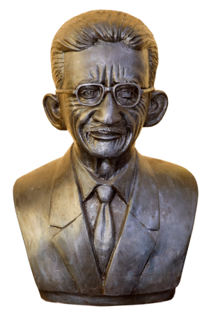

O Memorial Heróis do Tocantins, situado na orla à beira do lago em Porto Nacional, ocupa uma área de 600 metros quadrados. Idealizado pela Prefeitura, Municipal de Porto Nacional foi inaugurado em 12 de julho de 2015, durante as celebrações dos 154 anos de emancipação política e 277 anos de fundação da cidade.
